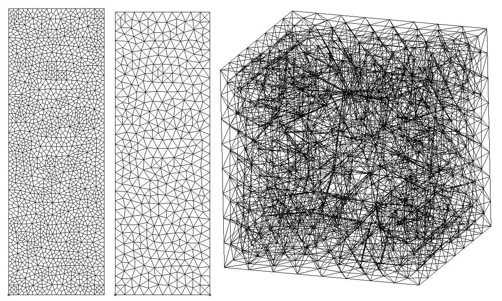

Unstructured Meshes
The script file: example-unstructured2d.jl, example-unstructured3d.jl
Unstructured 2D meshes made of irregular triangles or quads are used in example-unstructured2d.jl to solve a steady state reaction diffusion equation. This demonstrates how to import .MSH files and the unstructured mesh capabilities in 2D.
3D unstructured hexahedra and tetrahedra are also used for a similar equation in example-unstuctured3d.jl.
The following description is for the 2D case. Begin by importing and using the Finch module. Then initialize. The name here is only used when generating code files.
using Finch
initFinch("unstructured2d");Then set up the configuration. This example simply sets dimensionality of the domain and polynomial order of the basis function space.
domain(2, grid=UNSTRUCTURED)# dimension, geometry, discretization
functionSpace(order=2) # basis function polynomial orderImport the mesh from a .MSH file and set up all node mappings.
mesh("utriangle.msh") # Use this line for triangles
mesh("uquad.msh") # Use this line for quadsDefine the variable, test function, and other symbols.
u = variable("u") # same as @variable(u, SCALAR)
testSymbol("v") # sets the symbol for a SCALAR test function
coefficient("f", "(-10-(x+1)*200*pi*pi)*sin(10*pi*x)*sin(10*pi*y) + 10*pi*cos(10*pi*x)*sin(10*pi*y)")
coefficient("k", "x+1")
coefficient("C", 10)Convert the PDE
into the weak form
The boundary condition is specified.
boundary(u, 1, DIRICHLET, "0") # boundary condition for BID 1 is Dirichlet with value 0Then write the weak form expression in the residual form and solve for u.
weakForm(u, "k*dot(grad(u), grad(v)) + C*u*v+ f*v")
solve(u);End things with finalizeFinch() to finish up any generated files and the log.